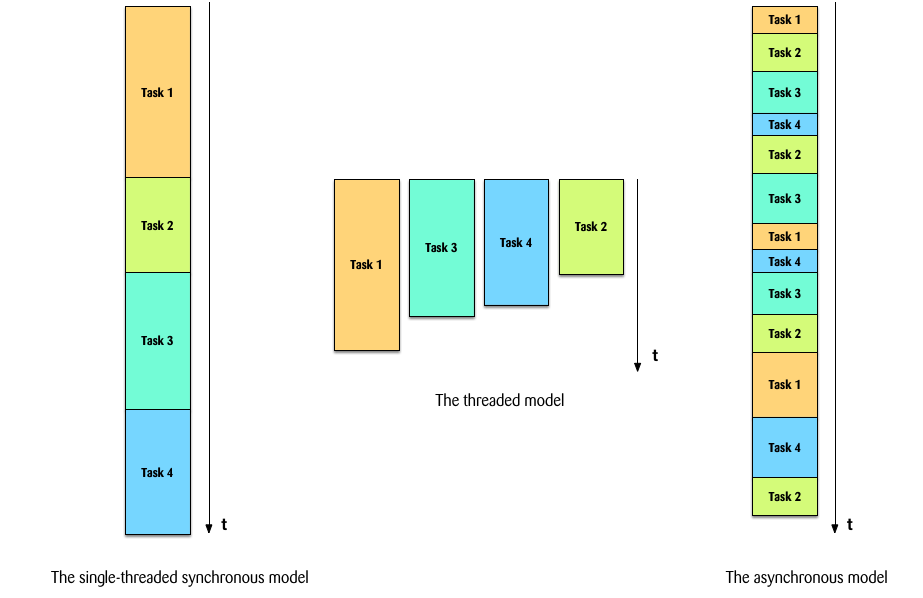
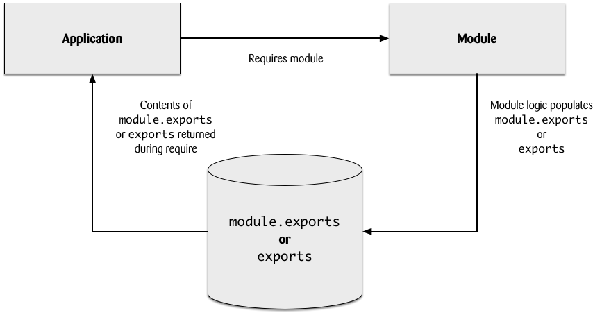

Node.js
An introduction to Node.js and JavaScript based web application development technologies
Created by Kevin Denver <kevin.denver@zuhlke.com> / Zuhlke


The goal of this presentation is to give you an introduction to Node.js, Yeoman, Bower, Grunt for building your enterprise web applications in JavaScript as well as other technologies/libraries such as Mocha for testing.
Welcome to Node.js
Node is designed for DIRT. It stands for data-intensive real time applications.
Node's goal is to provide an easy way to build scalable network programs.
"Node.js is a platform built on Chrome's JavaScript runtime for easily building fast, scalable network applications. Node.js uses an event-driven, non-blocking I/O model that makes it lightweight and efficient, perfect for data-intensive real-time applications that run across distributed devices."
When To Use Node?
Single Page Apps If you are planning to write an AJAX heavy single page app (think gmail), Node.js is a great fit as well. The ability to process many requests / seconds with low response times, as well as sharing things like validation code between the client and server make it a great choice for modern web applications that do lots of processing on the client.
JSON API's Building light-weight REST / JSON API's is something where Node.js really shines. Its non-blocking I/O model combined with JavaScript make it a great choice for wrapping other data sources such as databases or web services and exposing them via a JSON interface.
Node.js is a packaged compilation of Google's V8 JavaScript engine.
V8 is Google's open source high-performance JavaScript engine, written in C++ and used in Google Chrome. It implements ECMAScript as specified in ECMA-262, 5th edition.
V8 compiles JavaScript to native machine code before executing it, instead of more traditional techniques such as executing bytecode or interpreting it. The compiled code is additionally optimised (and re-optimised) dynamically at runtime, based on heuristics of the code's execution profile.
npm is the package manager for the Node JavaScript platform. It puts modules in place so that node can find them, and manages dependency conflicts intelligently.
$ npm install cowsay
$ cowthink node.js is cool
_________________
( node.js is cool )
-----------------
o ^__^
o (oo)\_______
(__)\ )\/\
||----w |
|| ||
// package.json
// npm init creates an initial package.json file
// Add dependencies to your project by calling npm install MODULE --save
// Add development dependencies to your project by calling npm install MODULE --save-dev
{
"name": "HelloWorld",
"version": "0.0.1",
"description": "My first Node application",
"main": "index.js",
"scripts": {
"test": "mocha"
},
"author": "Kevin Denver",
"license": "MIT",
"dependencies": {
"cowsay": "~1.0.3"
},
"devDependencies": {
"should": "~2.1.1",
"grunt": "~0.4.2"
}
}
// index.js
var cowsay = require('cowsay');
console.log(cowsay.say({text: 'Hello World', e: "oO", T: 'U '}));
$ node index.js
_____________
< Hello World >
-------------
\ ^__^
\ (oO)\_______
(__)\ )\/\
U ||----w |
|| ||
Node is being used in production by these companies: eBay, PayPal, Walmart, Groupon, LinkedIn, Yammer just to name a few.
// LinkedIn
When LinkedIn went to rebuild their Mobile application they decided to use Node.js for their
Mobile application server which acts as a REST endpoint for Mobile devices. Their
engineering blog talks about the Mobile stack.
// PayPal
We started in January and it took us a few months to get the necessary infrastructure in place
for node.js to work in PayPal, e.g. sessions, centralized logging, keystores. During this time
we had five engineers working on the Java application. Two months in to the Java development,
two engineers started working on the parallel node.js app. In early June they met at a
crossroads, the applications had the same set of functionality; the node.js application,
a smaller team with a two month delayed start, had quickly caught up. A few details stood
out after we ran the test cases and both applications passed the same functional tests.
The node.js app was:
* Built almost twice as fast with fewer people
* Written in 33% fewer lines of code
* Constructed with 40% fewer files
Node Programming Fundamentals

var http = require('http');
function getSomething() {
http.get('http://www.google.com', function(response) {
return response; // ??????
});
}
function saySomething(what) {
console.log(what);
}
var something = getSomething();
saySomething(something);
var http = require('http');
function getSomething() {
http.get('http://www.google.com', function(response) {
return response; // ??????
});
// returns nothing... undefined
}
function saySomething(what) {
console.log(what);
}
var something = getSomething(); // something = undefined
saySomething(something);
undefined
var http = require('http');
function getSomething(callback) {
http.get('http://www.google.com', function(response) {
callback(response);
});
}
function saySomething(what) {
console.log(what);
}
getSomething(function(what) {
saySomething(what);
});
This code is running on a single thread, waiting for a web request. When a web request, comes in you want to pass the work off to an asynchronous callback handler, freeing the main thread to respond to more requests.
If you block the main event loop, then no more requests will processed until it completes.
var http = require('http');
var url = require('url');
http.createServer(function(request, response) {
response.writeHead(200, {'Content-Type': 'text/plain'});
if (url.parse(request.url).pathname === '/wait') {
var startTime = new Date().getTime();
while (new Date().getTime() < startTime + 15000) {
// do nothing
}
response.write('Thanks for waiting!');
} else {
response.write('Hello!');
}
response.end();
}).listen(3000);
var http = require('http');
var url = require('url');
var cp = require('child_process');
http.createServer(function(request, response) {
var pathname = url.parse(request.url).pathname;
if (pathname === '/wait') {
cp.exec('node block.js', myCallback);
} else {
response.writeHead(200, {'Content-Type': 'text/plain'});
response.write('Hello!\n');
response.end();
}
function myCallback() {
response.writeHead(200, {'Content-Type': 'text/plain'});
response.write('Thanks for waiting!\n');
response.end();
}
}).listen(3000);
A callback is a function, passed as an argument to an asynchronous function, that describes what to do after the asynchronous operation has completed. Callbacks are used frequently in Node development.
fs = require('fs')
function readFile(filename, callback) {
fs.readFile(filename, function(err, data) {
if (err) {
callback(err);
}
callback(null, data.toString());
});
}
readFile('./erlkoenig.txt', function(err, data) {
if (err) {
return console.error(err);
}
console.log(data);
});
JavaScript that uses callbacks, is hard to get right intuitively. A lot of code ends up in
Callback Hell!
var fs = require('fs');
var gm = require('gm').subClass({ imageMagick: true });
var S = require('string');
function readdir(source) {
fs.readdir(source, function(err, files) {
if (err) {
console.log('Error finding files: ' + err)
} else {
files.forEach(function(filename, fileIndex) {
console.log(source + filename);
if (S(filename).endsWith('.jpeg')) {
gm(source + filename).size(function(err, values) {
if (err) {
console.log('Error identifying file size: ' + err)
} else {
console.log(filename + ' : ' + values);
aspect = (values.width / values.height);
widths.forEach(function(width, widthIndex) {
height = Math.round(width / aspect);
console.log('resizing ' + filename + 'to ' + height + 'x' + height);
this.resize(width, height).write(destination + 'w' + width + '_' + filename, function(err) {
if (err) console.log('Error writing file: ' + err);
})
}.bind(this));
}
});
}
});
}
});
}
readdir('./');
You can avoid a callback hell by writing named functions that handle the individual levels of callback nesting. Another way of dealing with callback hell is to use third party libraries such as async or Q. A promise represents the eventual result of an asynchronous operation.
async.series([
function(callback) {
asyncCall(callback);
},
function(data1, callback) {
anotherAsyncCall(null, data1, callback);
},
function(data1, data2, callback){
oneMoreAsyncCall(null, data1, data2, callback);
}
], function(err, result) {
// done, and handle any error resulting from any of the above calls
});
asyncCall()
.then(function(data1) {
// do something...
return anotherAsyncCall();
})
.then(function(data2) {
// do something...
return oneMoreAsyncCall();
})
.then(function(data3) {
// the third and final async response
})
.fail(function(err) {
// handle any error resulting from any of the above calls
}).done();
Control Flow Patterns allow you to run tasks in parallel or in series.
function doAsyncTasks() {
asyncCall().then(anotherAsyncCall()).then(oneMoreAsyncCall()).done();
}
function doAsyncTasks() {
Q.all([asyncCall(), anotherAsyncCall(), oneMoreAsyncCall()]).done();
})
As your project becomes bigger you'll need to bundle your code into reusable Node modules. Node modules allow you to select what functions and variables from the included file are exposed to the application.
var Currency = require('./currency');
var currency = new Currency();
currency.usdToGBP(100).then(function(amount) {
console.log('100 USD = ' + amount + ' GBP');
}).fail(function(err) {
console.error(err);
});
// currency.js
var request = require('request');
var sprintf = require('sprintf');
var Q = require('q');
function Currency() {
this.url = 'http://rate-exchange.appspot.com/currency?from=%s&to=%s';
}
Currency.prototype.getRate = function(from, to) {
var deferred = Q.defer();
request(sprintf(this.url, from, to), function(err, response, body) {
if (err || response.statusCode !== 200) {
return deferred.reject(new Error(err));
}
deferred.resolve(JSON.parse(body));
});
return deferred.promise;
}
Currency.prototype.usdToGBP = function(amount) {
var deferred = Q.defer();
this.getRate('USD', 'GBP').then(function(data) {
if (!data.rate) {
return deferred.reject(new Error(data));
}
deferred.resolve(amount * data.rate);
});
return deferred.promise;
};
module.exports = Currency;

Testing Node Applications
Two widely used libraries for testing are Mocha and should.js. Think jUnit and Hamcrest.
The following example uses Node's built in assert module.
var assert = require("assert")
describe('Array', function() {
describe('#indexOf()', function() {
it('should return -1 when the value is not present', function() {
assert.equal(-1, [1,2,3].indexOf(5));
assert.equal(-1, [1,2,3].indexOf(0));
});
});
});
should.js is an expressive, readable, test framework agnostic, assertion library for node. It extends the Object prototype with a single non-enumerable getter that allows you to express how that object should behave.
var should = require('should');
var user = { name: 'tj', age: 10, pets: ['tobi', 'loki', 'jane', 'bandit'] };
user.should.have.property('name', 'tj');
user.should.have.property('pets').with.lengthOf(4);
user.pets.should.include('loki');
user.pets.should.be.instanceof(Array).and.have.lengthOf(4);
user.age.should.be.within(5, 50);
user.age.should.be.above(5);
user.age.should.not.be.above(100);
user.name.should.match(/^\w+$/);
Tooling
Grunt: the JavaScript task runner for automating just about anything through a wide variety of plugins (2000+). Configure Grunt for your project by adding a file called: Gruntfile.js.
A Gruntfile is comprised of the following parts: The "wrapper" function, Project and task configuration, Loading Grunt plugins and tasks and Custom tasks.
module.exports = function(grunt) {
grunt.initConfig({
pkg: grunt.file.readJSON('package.json'),
concat : {
javascript: {
options: { separator : ' ' },
src: [ 'app/public/js/app.js', 'app/public/js/*.js', '!app/public/js/*.min.js'],
dest: 'dist/concat.js'
},
css: {
options: { separator : ' ' },
src: [ 'app/public/css/*.css', '!app/public/css/*.min.css'],
dest: 'dist/concat.css'
}
},
uglify: {
options: {
banner: '/*! <%= pkg.name %> <%= grunt.template.today("dd-mm-yyyy") %> */\n',
mangle: false
},
dist: {
files: {
'app/public/js/app.min.js' : [ '<%= concat.javascript.dest %>' ]
}
}
},
cssmin: {
css: {
src: '<%= concat.css.dest %>',
dest: 'app/public/css/app.min.css'
}
},
watch: {
files: ['app/public/js/*.js', 'app/public/css/*.css', '!app/public/css/*.min.js', '!app/public/js/*.min.js'],
tasks: ['concat', 'uglify', 'cssmin']
}
});
grunt.loadNpmTasks('grunt-contrib-uglify');
grunt.loadNpmTasks('grunt-contrib-concat');
grunt.loadNpmTasks('grunt-contrib-watch');
grunt.loadNpmTasks('grunt-css');
grunt.registerTask('default', ['concat', 'uglify', 'cssmin']);
};
Bower is a package manager for the web. It offers a generic, unopinionated solution to the problem of front-end package management.
// bower.json
{
"name": "SampleProject",
"version": "0.0.1",
"private": true,
"dependencies": {
"angular": "~1.2.5",
"bootstrap": "~3.0.3",
"html5-boilerplate": "~4.3.0",
"angular-route": "~1.2.5",
"angular-socket-io": "~0.2.0",
"font-awesome": "~4.0.3",
}
}
$ bower search jquery
Search results:
jquery git://github.com/components/jquery.git
jquery-ui git://github.com/components/jqueryui
jquery.cookie git://github.com/carhartl/jquery-cookie.git
jquery-placeholder git://github.com/mathiasbynens/jquery-placeholder.git
jquery-file-upload git://github.com/blueimp/jQuery-File-Upload.git
jasmine-jquery git://github.com/velesin/jasmine-jquery
jquery.ui git://github.com/jquery/jquery-ui.git
jquery.scrollTo git://github.com/flesler/jquery.scrollTo.git
jquery-migrate git://github.com/appleboy/jquery-migrate.git
jquery.validation git://github.com/jzaefferer/jquery-validation.git
...
$ bower install jquery --save
Yeoman combines Grunt and Bower into a consistent workflow. Using a generator concept inspired by Ruby on Rails, Yeoman creates a basic project structure based on a template.
$ npm install -g generator-angular # install generator
$ yo angular # scaffold out a AngularJS project
$ bower install angular-ui # install a dependency for your project from Bower
$ grunt test # test your app
$ grunt server # preview your app
$ grunt # build the application for deployment
Automating your build process with Jenkins is fairly easy for your Node project.
Tests and code coverage are kicked off by Grunt. The JavaScript test framework Mocha provides various reporters such as xUnit which Jenkins understands. Blanket.js provides the code coverage information that then is converted by a Mocha reporter into the widely understood cobertura XML schema.
'use strict';
module.exports = function(grunt) {
grunt.initConfig({
pkg: grunt.file.readJSON('package.json'),
mochaTest: {
all: {
src: ['test/**/*.js'],
options: {
require: 'coverage/blanket',
reporter: 'xunit',
quiet: true,
captureFile: 'test-reports.xml'
}
},
coverage: {
src: ['test/**/*.js'],
options: {
reporter: 'mocha-cobertura-reporter',
quiet: true,
captureFile: 'coverage.xml'
}
}
}
});
grunt.loadNpmTasks('grunt-mocha-test');
grunt.task.registerTask('test', ['mochaTest']);
};
For IDE's I've found Nodeclipse to work reasonably well. Another one is Webstorm which seems to be more mature than Nodeclipse and is based on IntelliJ.
Run the following command to turn any existing Node project into a Nodeclipse project and then go to Eclipse and Import an Existing Project.
$ nodeclipse -p
Hardening Node.js for Production
Make sure you run your Node application in production mode. Duh!
$ NODE_ENV=production node app.js
Whenever a node.js error is unhandled, it unwinds the stack and leaves V8 in an unrecoverable state. The only recovery is to restart the process. There are few modules such as pm2, forever that help.
Make sure to handle uncaughtException events like this:
var logger = require('./logger')
process.on('uncaughtException', function(err) {
logger.error('uncaughtException:', err.message);
logger.error(err.stack);
process.exit(1);
});
Listen to all error events: net.Server, tls.Server, http.Server, https.Server:
var logger = require('./logger')
server.on('error', function (err) {
logger.error(err);
logger.error(err.stack);
});
If you're deploying a web application I would recommend that you try to prevent hitting your Node.js processes with unnecessary traffic and use nginx or Apache to do all of the load balancing, gzip encoding, HTTP caching, static file serving etc.
http {
proxy_cache_path /var/cache/nginx levels=1:2 keys_zone=one:8m max_size=3000m inactive=600m;
proxy_temp_path /var/tmp;
include mime.types;
default_type application/octet-stream;
sendfile on;
keepalive_timeout 65;
gzip on;
gzip_comp_level 6;
gzip_vary on;
gzip_min_length 1000;
gzip_proxied any;
gzip_types text/plain text/html text/css application/json application/x-javascript text/xml application/xml application/xml+rss text/javascript;
gzip_buffers 16 8k;
upstream silly_face_society_upstream {
server 127.0.0.1:61337;
server 127.0.0.1:61338;
keepalive 64;
}
server {
listen 80;
listen 443 ssl;
server_name localhost;
return 301 $scheme://localhost$request_uri;
}
server {
listen 80;
listen 443 ssl;
server_name localhost;
error_page 502 /errors/502.html;
location ~ ^/(images/|img/|javascript/|js/|css/|stylesheets/|flash/|media/|static/|robots.txt|humans.txt|favicon.ico) {
root /usr/local/silly_face_society/node/public;
access_log off;
expires max;
}
location /errors {
internal;
alias /usr/local/silly_face_society/node/public/errors;
}
location / {
proxy_redirect off;
proxy_set_header X-Real-IP $remote_addr;
proxy_set_header X-Forwarded-For $proxy_add_x_forwarded_for;
proxy_set_header X-Forwarded-Proto $scheme;
proxy_set_header Host $http_host;
proxy_set_header X-NginX-Proxy true;
proxy_set_header Connection "";
proxy_http_version 1.1;
proxy_cache one;
proxy_cache_key sfs$request_uri$scheme;
proxy_pass http://silly_face_society_upstream;
}
}
}
Additionally, you can run pm2 on each of your dedicated Node servers.
pm2 is perfect when you need to spread your stateless code accross all CPUs available on a server, to keep all processes alive forever and to 0s reload it. Or have another nginx load balancer and reverse proxy on each Node server and start your app manually on different ports.
$ pm2 start app.js -i max # Will start maximum processes depending on CPU availables
This presentation uses Reveal.js - The HTML Presentation Framework.
Please let me know if you want to use this custom Zuhlke theme for your own presentation.
Do you want to get involved with Node?
- Book: Node.js In Action
- Book: Secrets Of The JavaScript Ninja
- Online: nodeschool.io - LEARN NODE.JS WITH INTERACTIVE LESSONS
- Online: nodeup.com - Node Podcasts
- Online: http://www.joyent.com/developers/node
- Check out my examples on GitHub: https://github.com/ToastShaman